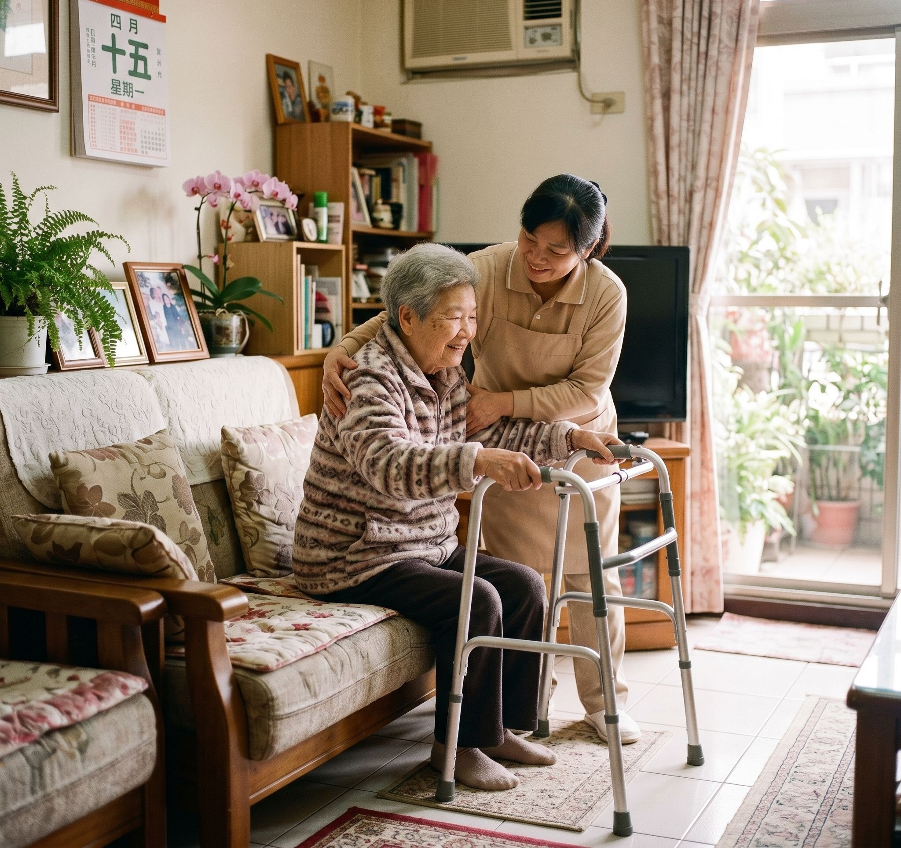

提供完整的居家照護服務，依政府公訂價格收費，並提供補助方案，讓每個家庭都能獲得所需的照護。
真實的服務經驗，讓您更了解美事如何陪伴每一個家庭。

王爺爺今年 80 歲，獨居於蘆洲，子女在外地工作，無法每日陪伴。家屬透過美事安排每日到府服務，協助日常清潔與餐食照顧，讓長輩在熟悉的家中安心生活。
涵蓋身體照護、日常協助、陪同外出等多元服務，依個案需求彈性安排。
依政府公訂價格收費，提供一般戶、中低收入戶及低收入戶補助方案。
| 服務項目 | 全額自費 | 一般戶 16% | 中低收入戶 5% | 低收入戶 |
|---|---|---|---|---|
| BA01 基本身體清潔（擦澡） | 260 元 | 41 元 | 13 元 | 全額補助 |
| BA02 基本日常照顧（30分鐘） | 195 元 | 31 元 | 9 元 | 全額補助 |
| BA03 測量生命徵象 | 35 元 | 5 元 | 1 元 | 全額補助 |
| BA04 餵食或灌食 | 130 元 | 20 元 | 6 元 | 全額補助 |
| BA05 餐食照顧（煮飯） | 310 元 | 49 元 | 15 元 | 全額補助 |
| BA07 協助沐浴及洗頭 | 325 元 | 52 元 | 16 元 | 全額補助 |
| BA08 足部照顧 | 500 元 | 80 元 | 25 元 | 全額補助 |
| BA10 翻身拍背 | 155 元 | 24 元 | 7 元 | 全額補助 |
| BA11 肢體關節活動 | 195 元 | 31 元 | 9 元 | 全額補助 |
| BA12 協助上下樓梯 | 130 元 | 20 元 | 6 元 | 全額補助 |
| BA13 陪同外出（30分鐘） | 195 元 | 31 元 | 9 元 | 全額補助 |
| BA14 陪同就醫（90分鐘） | 685 元 | 109 元 | 34 元 | 全額補助 |
| BA15 家務協助（30分鐘） | 195 元 | 31 元 | 9 元 | 全額補助 |
| BA16 代購服務 | 130 元 | 20 元 | 6 元 | 全額補助 |
| BA17 協助執行輔助性醫療 | 65 元 | 10 元 | 3 元 | 全額補助 |
| BA18 安全看視（30分鐘） | 200 元 | 32 元 | 10 元 | 全額補助 |
| BA20 陪伴服務（30分鐘） | 175 元 | 28 元 | 11 元 | 全額補助 |
| BA22 巡視服務 | 130 元 | 20 元 | 6 元 | 全額補助 |
| BA23 協助洗頭 | 200 元 | 32 元 | 10 元 | 全額補助 |
| BA24 協助排泄 | 220 元 | 35 元 | 11 元 | 全額補助 |
| GA09 居家喘息服務（2小時） | 770 元 | 123 元 | 38 元 | 全額補助 |